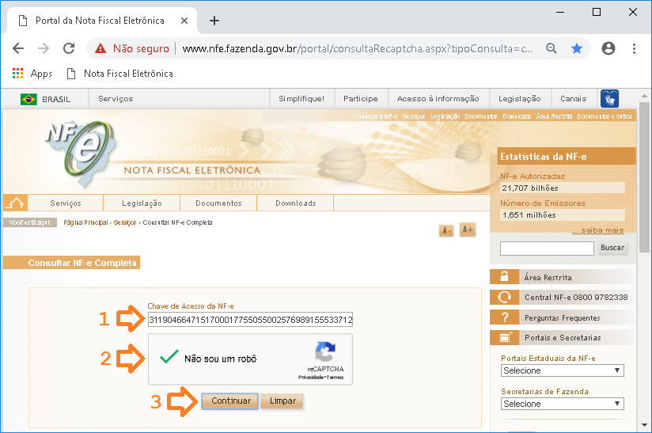
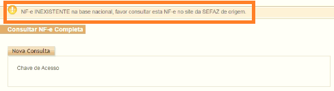
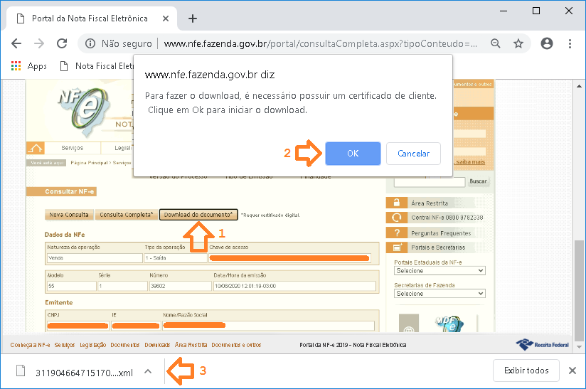

Com as recentes alterações na legislação, o download dos arquivos XML para processamento de entradas de notas fiscais só será permitido com o uso do certificado digital.
Este guia tem o objetivo de lhe orientar no processo de download do arquivo XML.
Para acessar o site da Nota Fiscal Eletrônica, abra o navegador do seu PC e digite o endereço abaixo:
Clique aqui para acessar o site da Sefaz

Ao abrir o site da NF-e:
1º informe a chave da nota;
2º marque o reCAPTCHA Não sou um robô;
3º clique em continuar.

Ao clicar em "Continuar", caso você veja essa mensagem acima, é porque essa nota não está disponível na base nacional e será necessário que seu fornecedor (o emitente da nota) envie o arquivo XML por e-mail.

Logo você verá as informações da Nota Fiscal
1º cliquem em "Download do documento*";
2º confirme a mensagem do certificado;
3º seu arquivo será baixado normalmente.
Agora você já pode voltar ao sistema e realizar a entrada da nota fiscal como de costume.
Lembre-se de que o arquivo XML é essencial para o processamento correto da entrada da nota fiscal.
Para baixar outra NF-e, clique no botão "Nova Consulta" e repita o processo.